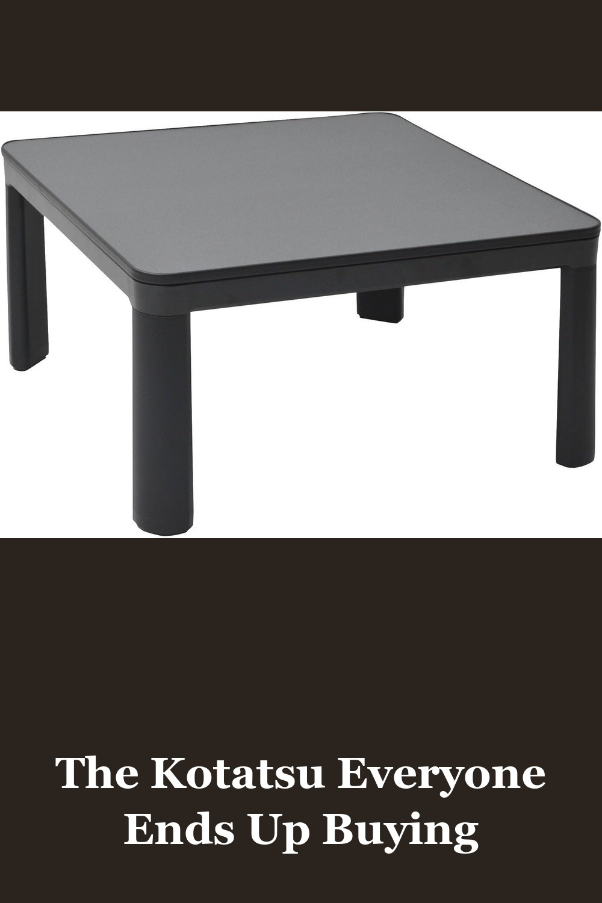
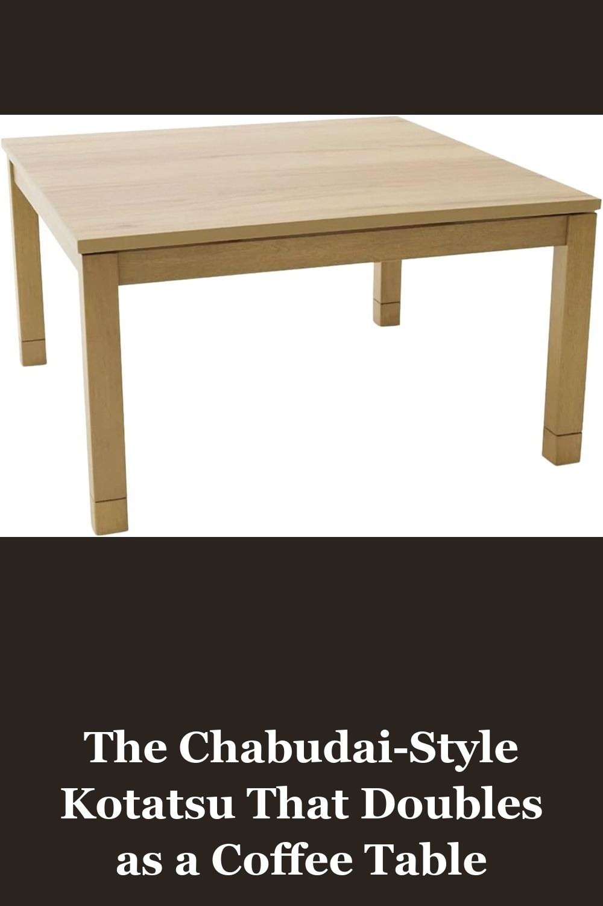
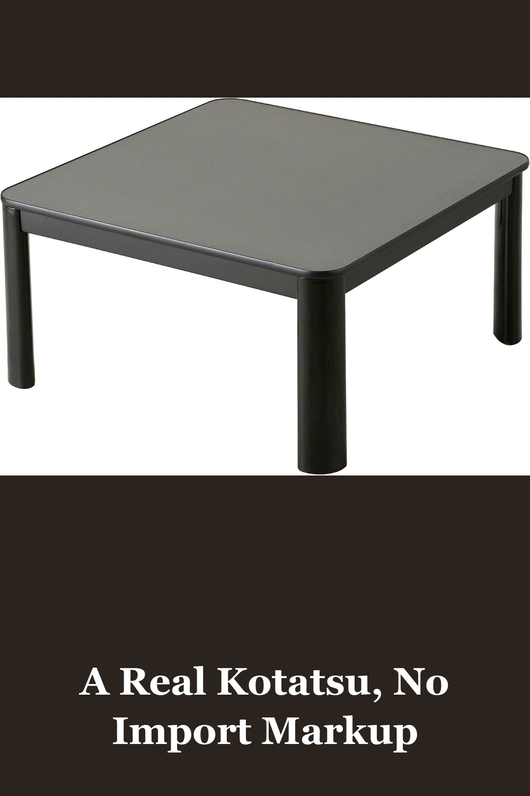

YAMAZEN Casual Kotatsu (75cm Square) Black ESK-751(B)
Japan's best-selling entry-level kotatsu — a reversible tabletop (two looks in one table), a 300W heater with an adjustable dial, and a felt-lined heat cage so kids and pets stay safe underneath. Assembles in minutes with the included tools.
I got it in my mind that I needed a kotatsu, so I obsessively researched how to get one... I was really left with the choice of spending $200 or $400+... Just get this one. Installation could not be easier... I have a feeling you'll be back to buy this one if you're in the US.— verified Amazon buyer
View on Amazon →
BJDesign Japanese Kotatsu Heated Table, 120V Heater, Natural, 29 x 29 in
A wood-grain heirloom-style kotatsu from a brand devoted to bringing authentic Japanese furniture abroad. Runs on standard US 120V power (no converter needed), and the cover lifts off in warmer months to reveal a genuine coffee table underneath.
I didn't want to bother with a converter for the plug, and this doesn't need one. I thought the table might be on the flimsy side, but it's actually really nice and sturdy... this works with any type of blanket - no need to buy a fancy expensive kotatsu blanket... I am thrilled with this thing.— verified Amazon buyer
View on Amazon →
KEN JAPAN KB-75US(BK) Kotatsu Heater Table, 120V, Reversible Gray/Brown
The budget entry point into kotatsu life — a reversible gray/wood tabletop, plug-and-play 120V heater, and a footprint that comfortably seats one to four. Lightweight plastic legs keep the price down without giving up the warmth.
I've wanted this table since I got my first paycheck way back when, but I never had the space for it nor the money. Yet now! I FINALLY GOT IT AND IT WAS SO WORTH IT!... It's wonderful! I'm so happy I bought this!!— verified Amazon buyer
View on Amazon →